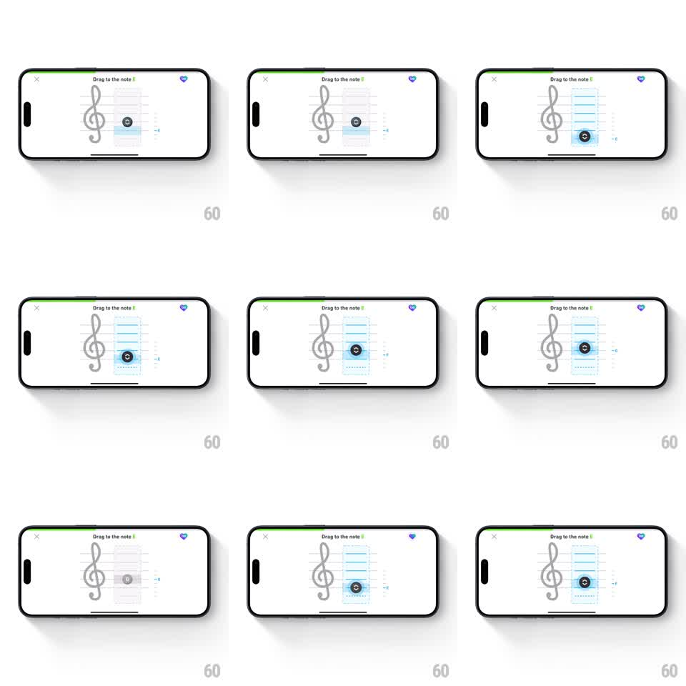

Media
Frame-by-frame

Rebuild this interaction 1:1: Duolingo Music's note-placement lesson - dragging a circular note token vertically across a highlighted staff region snaps it to staff lines, and dropping it on the correct line morphs the token into a musical note.

Rebuild this interaction 1:1: Duolingo Music's note-placement lesson - dragging a circular note token vertically across a highlighted staff region snaps it to staff lines, and dropping it on the correct line morphs the token into a musical note. ## Integration Integration: stack-agnostic spec - springs given as stiffness/damping, timed motions as duration + curve; map every value to your framework and animation library of choice. ## Scene Landscape lesson screen: treble clef staff left, a dashed drop zone column to its right with a light-blue highlight band covering the active range, a dark circular token with a music-note glyph inside, and a small "-6"/value readout at the right edge. Header shows "Drag to the note E" with a heart. ## Motion spec Pattern: vertical drag with magnetic snapping + success morph. - Drag: token tracks the finger 1:1 vertically within the highlighted column. - Snapping: within ~10px of a staff line, the token magnetizes to the line (spring ~450/25, ~120ms, tick haptic); the active line tints blue. - Correct drop: token morphs - the circle's glyph sharpens into a filled note and a small stem draws on (~200ms), highlight band flashes brighter blue, success haptic. - Wrong drop: token springs back to its start position (~250ms). - The blue highlight band pulses softly while idle (opacity 0.5 -> 0.8, 1.2s loop) to invite the drag. ## Calibration - Snap must be aggressive enough that free placement is nearly impossible - this is a lesson, not a synth. - The morph to a note only happens on the CORRECT line; other lines just hold the token. ## Reduced motion Token moves without magnet spring; success state swaps without morph. ## Don't miss - The highlight band marks the allowed drag range, and the token never leaves it. - Value readout at the right edge updates live with the token's position.